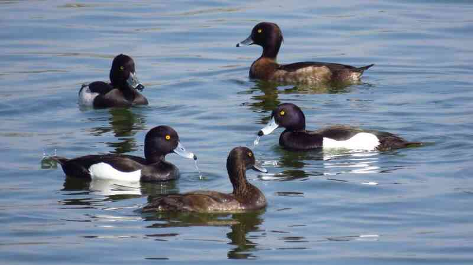

地景與水利
富竹賞鳥埤塘是桃園的一座埤塘， 不但可以提供鳥類棲息， 也具有重要的農業灌溉功能。 埤塘與周邊農田、水圳共同形成地方重要的生態與水利系統。

生態埤塘
富竹賞鳥埤塘提供穩定的水域環境， 成為水鳥停棲與覓食的重要場所。 良好的水質與自然棲地， 吸引許多候鳥與留鳥在此活動。

水利環境
埤塘除了維護生態， 同時也是農田灌溉的重要儲水空間。 水體與水路相互連結， 維持地方穩定的農業生產系統。
水利系統運作
給水系統： 水源主要來自雨水與附近灌溉渠道， 埤塘具備儲存水源的功能， 可在需要時提供穩定水量。
關鍵構造： 包括埤塘、水門、堤岸與引水渠道， 這些設施協助儲水與控制水流， 維持埤塘正常運作。
分水邏輯： 水先儲存在埤塘中， 再透過水門與渠道分配至周圍農田， 提供農業灌溉使用。